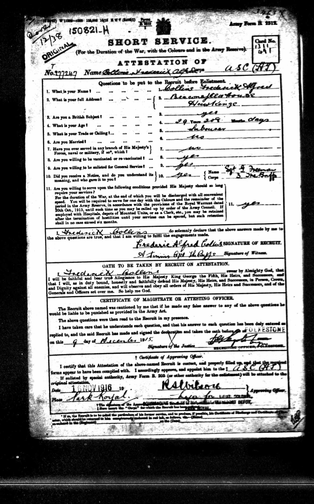
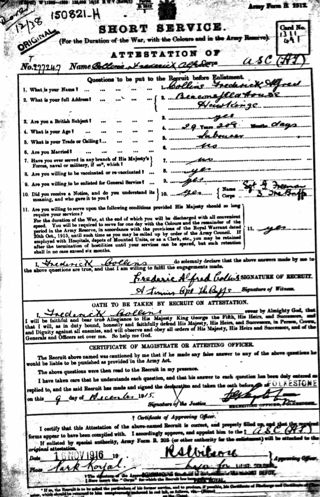
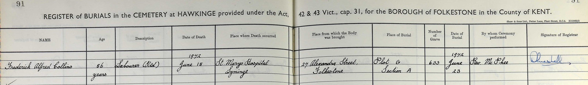

Frederick Alfred Collins 1886 - 1972
[ Home ] | [ Calendar ] | [ Surnames Index ] | [ Census Index ] | [ Family History ]A laborer and the child of William Collins (an agricultural laborer) and Ann Ralph, Frederick Collins, the second cousin twice-removed on the father's side of Nigel Horne, was born in Alkham, Kent, England on Feb 16, 18861,2,3 and. He married Helen Kingsmill (with whom he had 1 surviving child, Lillian Ruby Florence) in Folkestone, Kent, England on Feb 29, 19164. On Apr 5, 1891, he was living at Chalkshole Green in Alkham1. During 1916, he was serving in the army (soldier Number: T4/277247, Rank: Driver, Corps: Royal Army Service Corps).
He died on Jun 18, 1972 at St Marys Hospital, Lyminge, Kent3 and was buried at Hawkinge Cemetery, Hawkinge, Kent on Jun 23, 1972.
Parents
- William
- Ann Epps was born in 1859
Citations
- 1891 England, Wales & Scotland Census - Findmypast (was age 5 and the son of the head of the household)
- England & Wales births 1837-2006 - Findmypast
- England & Wales deaths 1837-2007 - Findmypast
- England & Wales Marriages 1837-2005 - Findmypast
Media
miuk1914a_083897-00786

Frederick Collins WWI Record

Frederick Collins Burial Record

England & Wales births 1837-2006 - BMD/B/1886/2/AZ/000121/029
England & Wales deaths 1837-2007 - BMD/D/1972/2/AZ/000222/020
England & Wales marriages 1837-2005 - BMD/M/1916/1/AZ/000196/029
British Army Service Records - GBM/WO363-4/7266565/59/788
Britain, Campaign, Gallantry & Long Service Medals & Awards - GBM/MCI/0903673
Silver War Badge Roll 1914-1920 - GBM/SILVERWAR/BADGES/796330
Family Tree

Generated by ged2site. Last updated on Jun 11, 2024